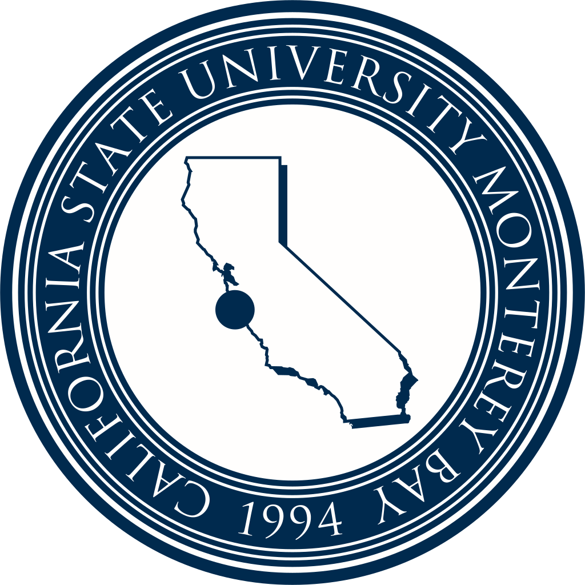

Bridging Engineering and Technology: My CSUMB Journey

After earning my first degree in Mechanical Engineering, I spent years building a career rooted in systems, problem-solving, and design. But I always had a curiosity for computer science — an itch I never really scratched. Now, through CSUMB's post-baccalaureate program, I’m finally diving in. This second bachelor’s is my way of exploring where that curiosity can take me, especially at the intersection of engineering and emerging technologies like AI and machine learning.
Below is a list of courses I have completed, am currently taking, or plan to take as part of my Computer Science program at CSUMB:
- CST300: Major ProSeminar
- CST338: Software Design
- CST363: Database Management
- CST334: Operating Systems
- CST311: Introduction to Computer Networking
- CST336: Internet Programming (in-progress)
- CST370: Algorithms (planned)
- CST462S: Race, Gender, Class in the Digital World (planned)
- CST383: Introduction to Data Science (planned)
- CST438: Software Engineering (planned)
- CST489: Capstone Project Planning (planned)
- CST499: Directed Group Capstone (planned)